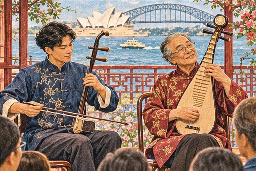

Sydney · October 2027
The sixth world gathering of the Guangfu community
Planned for October 2027 in Sydney, Australia. Exact dates, venue, programme and registration are yet to be announced.
A gathering shaped by migration
Guangfu associations first gathered in Guangzhou in 2013. The convention brings Cantonese-speaking communities together to reconnect with family histories, share cultural traditions and develop partnerships. Zhuhai, Jiangmen, Zhaoqing and Shaoguan hosted the following four editions.

Guangfu culture
Guangfu culture is closely associated with the Pearl River Delta. Cantonese, opera, tea-house traditions and family histories have travelled with migrants to places such as Australia, New Zealand and Southeast Asia.
Previous conventions have recognised distinguished contributors and young people in fields including culture, research and community service.
Read more about tea-house greetings, Zhuji Lane, Cantonese opera and a phrasebook that reached Sydney on our culture page: Guangfu culture, beginning with a Cantonese phrase (Chinese).
New Zealand Guangfu association history (Chinese; the association’s own account) · Shaoguan convention and awards (Chinese, archived copy)
Sydney in 2027
Sydney received the convention flag in Shaoguan in November 2025. At a Sydney press conference in June 2026, organisers announced plans to hold the sixth gathering in October 2027. Exact dates, the venue, registration and the programme await confirmation.
From the original Sydney bid to the 2027 gathering
During the 2017 Jiangmen convention, China National Radio reported that the next edition would be held in Sydney. According to the association’s president at the 13 June 2026 press conference, the COVID-19 pandemic prevented this, and Zhaoqing hosted the fourth edition in 2023. Sydney received the convention flag in Shaoguan on 25 November 2025. The Sydney press conference on 13 June 2026 announced plans for October 2027, which would mark the first convention outside China.
Press conference coverage named three intended co-organisers: the Australian Guangfu association (澳洲广府人（珠玑）联谊总会), 广府人联谊总会 and 广东省广府人珠玑巷后裔海外联谊会. Cultural exchange, younger generations and business links were among the themes discussed. The detailed programme remains to be announced.
Flag handover report (Chinese, archived copy) · June 2026 Sydney press conference report (Chinese) · China National Radio report on the 2017 Jiangmen convention (Chinese) · Sydney Today report on the June 2026 press conference (Chinese)
Attendee information
Can I register?
Registration, fees and delegation arrangements have yet to be announced.
Can I book accommodation near the venue?
The venue and any conference hotel arrangements have yet to be announced.
How do I get conference updates?
Check this page for confirmed details. The organisers have yet to publish a conference contact channel.
Is there a process for associations, media or volunteers?
Group registration, media accreditation, volunteering and partnership arrangements have yet to be announced.
Will language support and accessible seating be available?
Language and accessibility arrangements are pending the venue and attendee announcements.
The 2026 community programme
A 12 September press conference in Sydney Chinatown outlined the Cantonese singing competition, community health talk and charity concert. The three events took place at Sydney Town Hall on 6 November.
September 2026 press conference and photos (Chinese) · November event report (Chinese; original reader link no longer opens, to be verified)
A phrasebook that travelled from Hong Kong to Sydney
The yellow title page of this copy of 華英通語集全, a Chinese–English phrasebook, still records that it was revised in the jiashen year of the Guangxu reign (光緒甲申重訂). The Hong Kong publisher 文裕堂 printed it in 1884. Today it is held in Ashfield, Sydney, by the Ashfield & District Historical Society.
An English inscription on another page preserves two names: Quong Tart (梅光达) gave the book to his employee Alf Hughes. More than a century later, this small gift can still be found in Sydney.
Further reading
One-page summary (Chinese, plain text)
Guangdong government report on the handover (Chinese, archived copy)
June 2026 Sydney press conference report (Chinese)
Chinese Herald community coverage (Chinese; original reader link no longer opens, to be verified)
The Australian association
The association held its founding gathering at Sydney Town Hall on 9 September 2014. Its delegates joined an oral-history exchange with visitors from Zhaoqing in 2016, and the association co-hosted a Sydney business summit in 2017. At its tenth anniversary in 2024, its president reported 51 member associations; June 2026 press conference coverage reported 61.
Association timeline (Chinese) · Anniversary report (Chinese)
Youth and business networks
In June 2026 the Australian association announced youth and business departments, focused respectively on cultural participation and business connections. The same coverage reported 61 member associations as of June 2026.